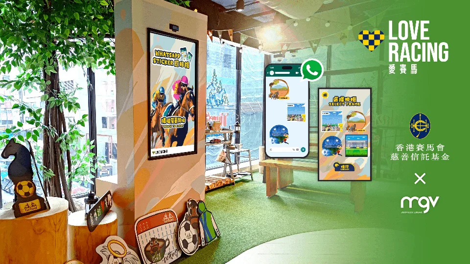

← Back to selected work
Interactive / PC
HKJC Whatsapp Sticker Photobooth
A photobooth for creating custom animated WhatsApp stickers with HKJC themes.

Project overview
The photobooth is a simple and fun way to create custom animated WhatsApp stickers with Hong Kong Jockey Club themes.
A closer look
Project gallery.
Explore screenshots, footage and project details.